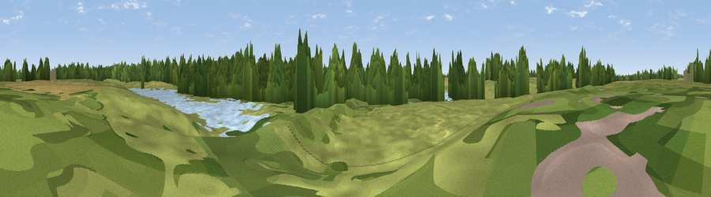

Viewpoint near Warmingham
#45738 in England · top 98% of its area beats it · near WarminghamThe view, rendered

A 360° render of this exact spot computed from the terrain model, tree cover and land cover — summer colours, afternoon light, calibrated against photographs of famous viewpoints. Real trees, hedges and buildings will differ in detail.
The panorama
Grey silhouette: terrain skyline in each direction (720 bearings, Earth curvature and refraction included). Dashed green: skyline with trees (+15 m) and buildings (+8 m) as obstacles. Blue strip: how far the ground is visible on each bearing.
Where the view opens
Wedge length = distance to the farthest visible ground on that bearing (vegetation-aware). Rings at 10, 25 and 50 km.
What fills the view
46% grassland · 36% woodland · 8% water · 7% built-up · 2% cropland
Angular shares of the visible panorama (visual magnitude), not map area. Landscape diversity 0.52 (0–1 Shannon).
Key numbers
More beautiful places nearby
The staircase of upgrades: each row has a higher view potential than everything closer. Driving times are estimates from straight-line distance, calibrated against real road routing — check an actual route before setting out.
| Place | Direction | Drive | Score |
|---|---|---|---|
| Brockwood Hill | SE · 9 km | ~18 min | 35.2 |
| Viewpoint near Audley | SE · 11 km | ~21 min | 52.0 |
| Viewpoint near Talke | ESE · 12 km | ~22 min | 67.7 |
| Bignall Hill | SE · 13 km | ~24 min | 75.2 |
| Viewpoint near Mow Cop | E · 13 km | ~25 min | 80.2 |
| Viewpoint near Harthill | WSW · 22 km | ~36 min | 80.5 |
| Viewpoint near Little Wenlock | S · 52 km | ~73 min | 84.2 |
| The Wrekin | S · 52 km | ~74 min | 85.0 |
53.13266, -2.41291 · source: osm viewpoint · position refined by local search. Computed location — check access rights before visiting.